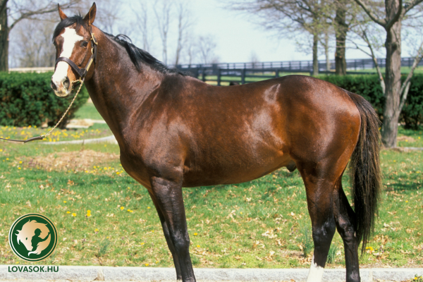
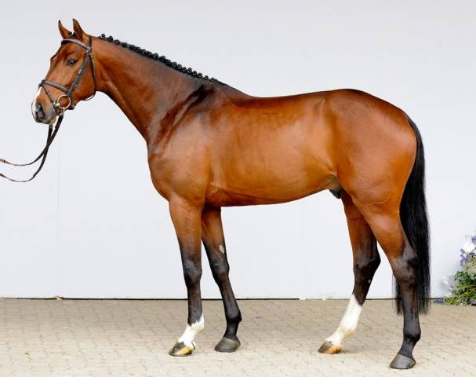
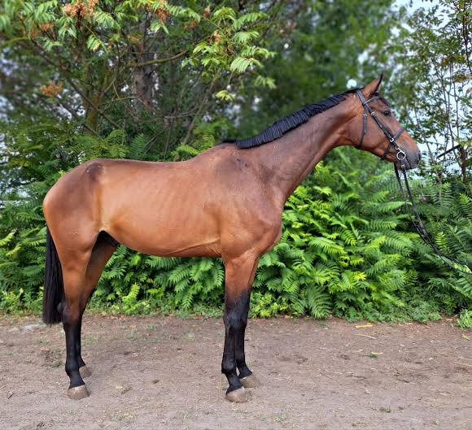
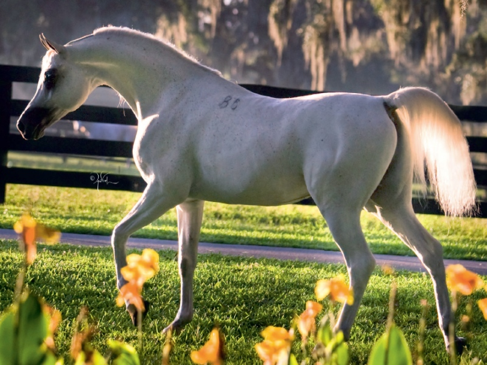
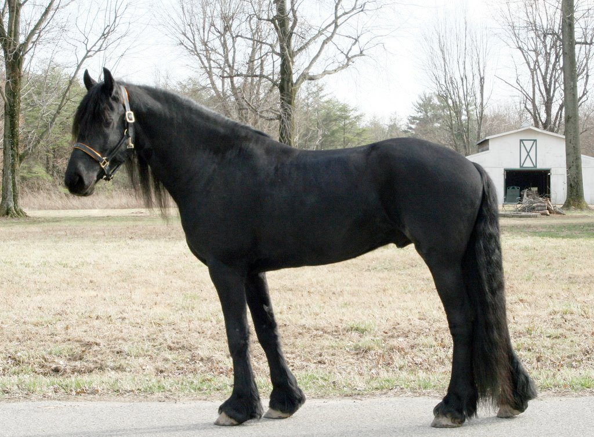

1. Kattintson a felső menüsorban a Fogadás gombra!
2. Válassza ki a kedvenc lovát és a versenytípust a legördülő menüből!
3. Írja be a megtenni kívánt tét összegét a mezőbe!
4. Kattintson a Fogadás elküldése gombra a rögzítéshez!
5. Az Eredmények menüpont alatt azonnal láthatja, hogy a fogadása nyert-e!
Kincsem a magyar lósport büszkesége, a világ legsikeresebb versenylova. Pályafutása során 54 versenyen indult, és mind az 54-et megnyerte! Ezzel a teljesítményével bekerült a Guinness Rekordok Könyvébe is.
Overdose a 2000-es évek legsikeresebb magyar versenylova volt. Sorozatban 12 futamot nyert meg Európa legrangosabb pályáin, villámgyors vágtájáról és megalkuvást nem tűrő küzdőszelleméről vált ismertté.
A lóversenyzés nemcsak a gyorsaságról, hanem az eleganciáról is szól. A nagy nemzetközi futamokon hagyomány a kiöltözés, a hölgyeknél a különleges kalapok viselése, a VIP páholyokban pedig a pezsgőzés.
Klasszikus akadálypályás verseny, ahol a ló és a lovas összhangja, a precíz ugrási technika és az időeredmény dönt a győzelemről.
A leggyorsabb futam, ahol a lovak maximális sebességgel vágtáznak a célvonalig. igazi közönségkedvenc száguldás.
Hagyományos futam, ahol a hajtók kétkerekű kocsiban (szulki) ülve irányítják a lovakat, melyeknek végig szabályos ügetésben kell haladniuk.
1000 méter alatti villámgyors futam, ahol a robbanékonyság a legfontosabb. Itt egyetlen másodperces hiba is a győzelembe kerülhet.
Különleges esti verseny reflektorfényben, ahol a klub legjobb lovai mérik össze erejüket egy látványos hangulatú futamban.

Angol telivér. Rendkívül gyors és kitartó fajta, a hosszabb távú galoppversenyek abszolút esélyese.

Holsteini fajta. Nyugodt vérmérsékletű, intelligens ló, aki a díjugrató pályákon nyújt kiemelkedő teljesítményt.

Hannoveri sportló. Erőteljes felépítésű, kiváló rugózású ló, aki az ügetőversenyek egyik legnagyobb sztárja.

Arab telivér. Elegáns megjelenésű, villámgyors sprintló, aki a rövid távokon verhetetlen.

Friesian fajta. Lenyűgöző fekete sörényű, látványos mozgású ló, aki az éjszakai mesterfutamok közönségkedvence.
Itt láthatja a rögzített fogadásainak sorsolási eredményét:
Ha probléma merülne fel, írjon nekünk: royalridingclub7@gmail.com